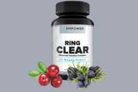

Ring Clear Scam or Legit? The Shocking Truth Exposed (2026 Review)

Click Here to Check Official Batch Availability →| Product Name: | Ring Clear |
| Editorial Score: | 4.8 / 5.0 ⭐⭐⭐⭐⭐ |
| Primary Purpose: | Targeted Bioactive Health & Vitality Formula (Natural Health & Dietary Supplement) |
| Manufacturing / Delivery: | c-GMP Certified, FDA-Registered Facility (USA) |
| Guarantee Shield: | 100% Risk-Free Money-Back Guarantee |
| Official Portal: | Verified Direct Manufacturer Website → |
Ring Clear Reviews 2026 – Is it efficient? Experts Advice
Ring Clear is a tinnitus relief supplement made with 12 clinically proven active components that can eliminate inner ear noise and improve hearing and brain function.
Most of the Ring Clear reviews have been majorly positive, with an average rating of 4.6/5.
What is Ring Clear?
Ring Clear is an advanced tinnitus complex that is the perfect ear-ringing formula. This product works great for anyone of any age and has no side effects.
The added active components in this formula are purely sourced from nature’s extract. Ring Clear helps support healthy hearing. It easily kicks that incessant ear ringing to the curb once and for all.
This efficient tinnitus breakthrough includes a proprietary blend of all-natural active components that are naturally sourced and highly efficient.
This supplement is unique compared to other fake products or methods. This dietary hearing health formula safeguards your life and drastically changes your life without painful situations in your ears.
How Does Ring Clear Work?
Ring Clear works very well by combining several extremely potent components to help fight off a hazardous toxin that is robbing you of your hearing.
This vitamin can help you focus again, improve your memory, and even shield your brain from further illnesses in the future. Each component of this mixture has undergone scientific testing and has been shown to eliminate the poisons that lead to hearing loss.
The components in this supplement replenish the nutrients that have been depleted from your brain, causing the plaque to dissolve. This supplement helps your hair renew, mend, and nearly recover in days.
If your hearing is restored, you can properly defend yourself against future brain problems like memory loss. Our product reverses your hearing loss in the most efficient manner possible.
It contains certain nutrients that both alter and heal hearing loss. This supplement can be used by anyone at any age to help with ear and hearing issues. It may even help your hearing get better with age.
Ring Clear is a potent remedy that mitigates inner ear noise, enhances brain function, and safeguards against diseases like dementia, Alzheimer’s, and Parkinson’s!
You’ll also get a full night’s sleep, wake up feeling rejuvenated, regain your memory, and live your life like you used to—going out with friends and spending quality time with your loved ones.
Ring Clear Ingredients
Ring Clear includes an efficient combination of 12 clinically proven active components that are entirely safe for use by anyone. This supplement contains the minerals and vitamins that are combined and made in the form of a capsule.
These active components’ pure and natural mix improves hearing without causing any side effects. The list of elements present in the Ring Clear is as follows:
Hibiscus
Hibiscus helps calm the nervous system and improves circulation to the ear and throughout the body. Ring Clear includes hibiscus, which potentially mutes distorting noise signals.
Hawthorn Berry
Hawthorn Berry helps you end panic attacks, easing common congestion symptoms and calming the nerves.
Olive Leaves
Olive leaves lessen inflammation in the ear canal, which prevents infections in your ears and lessens ear discomfort.
Niacin
Niacin restores your harmed cells perfectly, facilitating relaxed, painless muscles and increasing the inner ear’s blood flow.
Garlic
Garlic eases cold symptoms that could cause blockage in the ears. This ingredient perfectly enhances blood flow to the small ear arteries and mitigates ear inflammation.
Vitamin B6
Vitamin B6 helps lessen lightheadedness, which enhances mental health and keeps the ears from becoming extremely irritated.
Vitamin B12
Red blood cell production is aided by vitamin B12, which restores injury to the ear’s tiny blood vessels and aids in avoiding excessive ringing.
Buchu leaves
These Buchu leaves are an anti-infective that lowers fevers & coughing and helps lessen ear pressure.
Uva ursi and juniper berries
These active components rid your brain of poisons, which lowers microorganisms and possesses antioxidant qualities.
Green Tea
Green teamitigates inflammation, lessening hearing difficulties and enhancing mental performance.
Vitamin C
Vitamin C safeguards the brain from Parkinson’s, Alzheimer’s, and tinnitus by reducing the ringing sound, which also mitigates the chance of heart disease.
Pros
Ring Clear is a natural and dietary supplement that treats the root causes of hearing loss in most adults. Here is a complete list of its benefits:
- Ring Clear is 100% natural and side-effect-free.
- This supplement works great for anyone at any age.
- The added ingredients are purely sourced from nature’s extract.
- This supplement delivers real benefits within days.
- Ring Clear doesn’t cause any prescription or dangerous, harmful conditions.
- This supplement reduces ear inflammation naturally.
- Ring Clear is clinically tested and proven to offer remarkable benefits.
- It helps in fighting dangerous toxins that steal your hearing.
- This supplement protects you against toxins and nutrient deficiencies.
- Ring Clear revives your hearing naturally.
Cons
- Ring Clear is available online only. There is no offline availability.
- Individual results may vary from person to person—it all depends on your hearing condition.
- Consult your physician before taking any dietary supplement. Do not exceed the recommended dosage.
How to use it?
The Ring Clear supplement is a natural solution in vegan-friendly capsule form. Each Bottle of Ring Clear contains 60 vegetarian capsules. For efficient results, consuming two pills of Ring Clear daily with a meal and 8oz of water is recommended.
Ring Clear is a potent formula for men and women who want to maintain a healthy level of hearing. Consuming the hearing support supplement Ring Clear daily for the long term is suggested for optimum and consistent results.
Ring Clear supplement is free from known side effects; however, you must consult your physician before taking any supplement if you have any chronic illness.
In case of any adverse effects from the solution, it is advisable to discontinue consumption. Take it for a longer duration, at least six months, to observe a complete cure.
Any Side Effects?
There are no common side effects to any of the active components in Ring Clear. USDA certifies all our active components as the highest quality organic, dairy-free, soy-free, gluten-free, non-GMA, and vegan.
However, it’s always recommended to consult a medical professional before beginning any supplement, diet, or exercise plan.
Ring Clear Customer Reviews
Most of Ring Clear has been majorly positive, with an average rating of 4.68/5 from 19,369 reviews.
“I’ll admit, I was very skeptical. I’ve suffered from tinnitus for over 15 years, and I thought I’d hear that noise until the day I died…
After one week of taking Ring ClearTM, the piercing sound felt more like a buzz… after a month, it was gone.
I feel truly blessed that I trusted Ring ClearTM and finally have relief. I’m looking forward to enjoying my retirement in peace!”
Cassandra – Wyoming
“I’ve had this mild but annoying buzz in my ears since I worked in construction in my 20s… I honestly didn’t see how a pill would help.
But, since I began taking Ring ClearTM, I have noticed a dramatic difference.
It has only been a few weeks, but the buzz is getting less and less each day. I can’t wait to see how much it benefits my brain!”
Ronald
“Ring ClearTM has changed my life…
My family and friends never really grasped just how devastating my tinnitus was…
But they noticed my new lust for life… I’m enjoying things I haven’t in decades, and my memory is sharp as a tack. It hardly seems real.
I’m telling all of my friends suffering from tinnitus to take Ring ClearTM because it works.”
Jack
Pricing
Ring Clear is a mix of necessary active components to make your hearing better. When you start using the Ring Clear within a month, you will feel the progress in your hearing.
If it improves your hearing, you can feel refreshed and improve your memory function. Ring Clear will work in-depth to clear the perception and give you the expected results.
- One Bottle of Ring Clear is available for $69.95, along with minor shipping charges.
- Two Bottles of Ring Clear is available for $119.90, and you save upto 120$ with free US Shipping.
- Four Bottles of Ring Clear are available for $199.80, and you can save up to $300 with free US shipping.
You can choose according to your wish and requirement from the price range mentioned above, and there is no restriction. Visit the official website, and you can grab the excellent package that you would like most.
You will get free shipping to the United States for the two boxes.
Bonus
When you order Ring Clear today, you can get bonuses as follows:
- Bonus #1: 5 Ways to Protect Your Hearing Naturally
- Bonus #2: The Truth About Hearing Aids
Shipping
They ship worldwide using USPS and UPS services and email you their status. You can get Ring Clear Prices on their official website, and there is even free shipping!
You can buy bottles in 6, 3, or 1. It depends on how much you want to buy. They also offer discounts! Just order and see how it is delivered to you in a hurry.
Whenever you buy a Ring Clear bottle, one bottle, three bottles, or six, be sure there is a 100% guarantee, no questions asked, for 90 days.
Your item will typically ship the following business day after placing your order. Your package may take up to 7 business days to arrive, but most customers get their items in 3–4 business days.
Conclusion
Ring Clear has earned an outstanding overall rating of ⭐⭐⭐⭐⭐ 4.68/5 stars based on over 19,369 customer reviews.
In verdict, I highly recommend you take Ring Clear! This product helps restore the missing nutrients in the brain. This potent formula offers the best natural protection that regrows, repairs, and restores completely.
I’m so confident you will love the way this supplement works for you in effectively functioning your hearing. This supplement is worth every single penny of yours.
If you’re unsatisfied with your results, you can ask for a refund. This product comes with a full 100% money back guarantee.
So, what are you waiting for? Get your bottle of Ring Clear today! Hurry up!!
Frequently Asked Questions
Why choose Ring Clear?
Ring Clear is worth every single penny of yours. One of the most impressive products you can take every day. This supplement is encapsulated with a blend of high-quality active components known for their properties to restore hearing and improve brain function.
How do I reach the customer support team?
Support Email – support@empowerhealthlabs.com
Support Number – (800)-974-2790
Can Ring Clear be easily affordable?
Ring Clear can be easily affordable by anyone! This supplement is the must-have and doctor-endorsed formula that helps you by making you get fast, natural relief from many hearing disorders. This product has been tested and proven to remove toxins that cause hearing loss.
Are added ingredients 100% natural?
The added active components in Ring Clear are purely sourced from nature’s extract, which won’t cause you any side effects. This product is entirely safe to use, unlike any other dangerous hearing aid supplements.
.